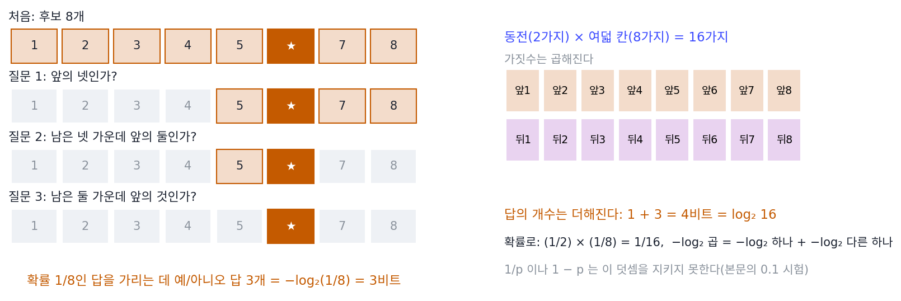
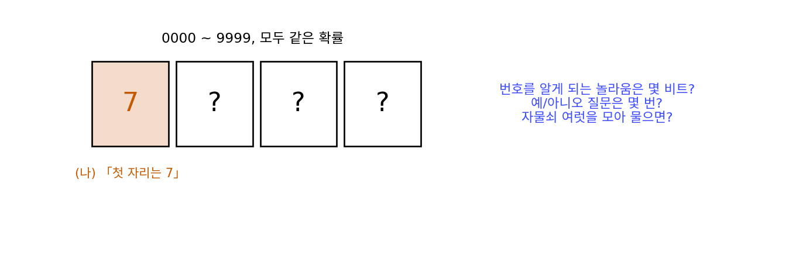
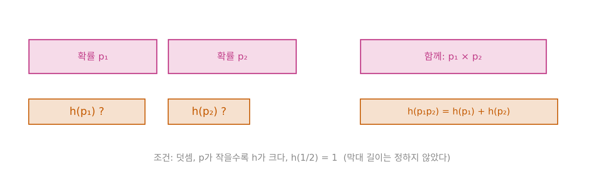
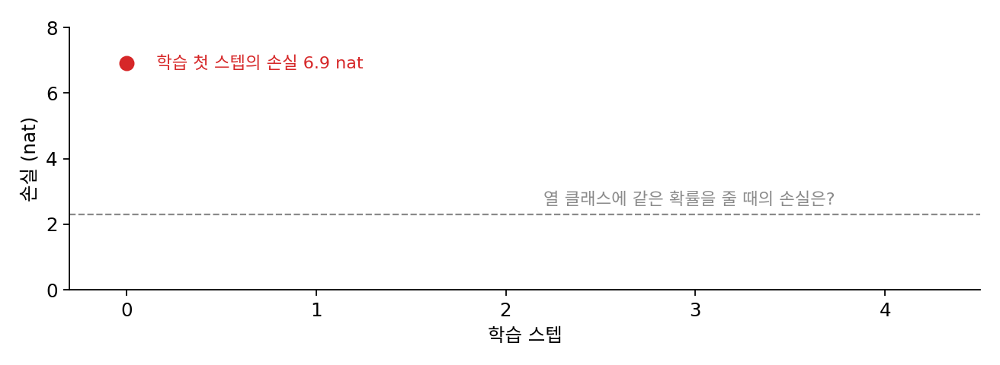

엔트로피: 평균 놀라움, 코드 길이의 하한
이 장의 물음
열 가지 그림을 가르는 분류기를 처음 학습시키면, 첫 스텝의 손실이 2.30 근처에서 시작하는 것을 자주 본다. 언어 모델을 학습시키면 손실은 빠르게 내려가다가 어느 값 근처에서 더디게 움직이고, 아무리 오래 돌려도 0에는 닿지 않는다. 학습 기록에 찍히는 그 손실은 모델이 정답에 준 확률에 로그를 씌우고 부호를 바꾼 값의 평균인데, 확률 하나에 왜 로그를 씌우는지, 2.30이라는 숫자가 어디서 오는지는 잘 따지지 않고 지나간다.
이 책은 「자료를 짧게 적을 수 있다면 규칙을 찾은 것인가」를 묻는데, 그 물음을 따지려면 먼저 「짧다」를 잴 단위가 있어야 한다. 0과 1로 적는 길이, 곧 비트로 재기로 하면 확률과 길이는 어떻게 이어질까?
- 드문 일이 일어났다는 소식은 왜 흔한 일의 소식보다 「크다」고 느끼고, 그 크기를 숫자 하나로 적으려면 확률에 무엇을 해야 할까?
- 날마다 날씨를 0과 1로 보낸다면 하루에 평균 몇 비트까지 줄일 수 있을까? 더 줄일 수 없는 바닥이 있을까?
- 비율을 잘못 알고 코드표를 만들면 비트를 얼마나 더 쓰게 될까? 분류 손실의 이름에 왜 「엔트로피」가 들어 있을까?
- 언어 모델은 앞 토큰을 보고 다음 토큰을 맞히는데, 앞을 알면 적어야 할 비트는 얼마나 줄고, 서로 독립이 아닌 토큰들의 손실을 왜 그냥 더해도 될까?
- 예보를 보면 내일 날씨에 대해 평균 몇 비트를 덜 모르게 될까?
놀라움: 확률 하나를 비트로
「오늘 아침 해가 떴다」는 소식은 아무도 전하지 않지만, 「오늘 아침 일식이 있었다」는 소식은 뉴스가 된다. 드문 일일수록 알려 줄 것이 많다는 느낌은 누구에게나 있는데, 느낌만으로는 두 소식 가운데 어느 쪽이 몇 배 큰지 말할 수 없다. 소식의 크기를 그 일이 일어날 확률만으로 정할 수 있다면, 확률에 어떤 계산을 해야 할까?
스무고개로 세기
크기를 재려면 세는 단위가 있어야 한다. 예/아니오로만 답하는 스무고개는 그런 단위를 준다. 친구가 1부터 8까지의 카드 가운데 한 장을 똑같은 확률로 골랐다면, 「앞의 넷 가운데 있어?」처럼 후보를 반씩 가르는 질문 세 번이면 어느 카드인지 알아낸다. 후보가 둘이면 답 하나, 1,024개면 답 열 개가 든다. 확률이 1/2ᵏ인 결과를 알아내는 데 예/아니오 답이 k개 들고, k = −log₂(확률)이다.
서로 상관없는 소식 둘을 한꺼번에 들으면 어떻게 될까? 동전의 앞뒤(2가지)와 여덟 장 가운데 한 장(8가지)을 함께 알려 주면 경우는 2 × 8 = 16가지이고, 답은 1 + 3 = 4개면 된다. 가짓수는 곱해지는데 답의 개수는 더해진다. 확률로 말하면, 독립인 두 일이 함께 일어날 확률은 곱해지고 그 소식을 알리는 데 드는 답은 더해진다.

소식의 크기를 확률 p의 함수로 정하려면, 확률이 작을수록 커져야 한다는 조건만으로는 모자란다. 1/p도, 1 − p도 확률이 작을수록 커지기 때문이다. 여기에 「독립인 두 소식을 함께 들으면 크기가 더해진다」는 조건을 얹어 확률 0.1인 독립 사건 둘로 시험해 보자. 둘이 함께 일어날 확률은 0.01이다. 1/p는 따로 더하면 10 + 10 = 20인데 함께 일어난 일은 1/0.01 = 100이고, 1 − p는 따로 더하면 1.8인데 함께는 0.99라서 둘 다 떨어진다. −log₂ p는 따로 더해도 함께 재도 6.644로 같다(sources/entropy/s1_surprise.py). 곱을 덧셈으로 바꾸는 함수가 로그이고, 확률이 작을수록 커지려면 부호를 바꿔야 한다.
이렇게 결과 x가 일어났다는 소식의 크기를 그 확률의 −log로 잰 값을 놀라움 (정보량, surprisal)이라 한다. 밑을 2로 하면 단위가 비트(예/아니오 답 하나)이고, 자연로그 ln을 쓰면 단위가 nat이다.
동전 앞면은 1비트, 주사위의 6은 2.585비트, 생일이 오늘이라는 소식은 8.512비트이고, 동전 앞면이 열 번 잇달아 나오면 1비트짜리 놀라움 열 개가 더해져 10비트다. nat으로는 각각 0.693, 1.792, 5.900, 6.931 nat이다. 2.585비트처럼 정수가 아닌 놀라움이 질문 몇 번에 해당하는지는 문제 1에서 따져 본다.
「누구에게?」를 식 안에 적기
놀라움은 결과 자체에 붙은 값이 아니다. 「감사합니」까지 들은 사람에게 다음 글자 「다」는 거의 확실하니 놀라움이 0에 가깝지만, 한국어를 모르는 사람에게는 수천 가지 글자 가운데 하나다. 식의 p(x)는 듣는 사람이 매긴 확률이고, 그래서 같은 소식도 무엇을 아는 사람이 듣느냐에 따라 비트 수가 달라진다.
섀넌이 일부러 고른 길이었다. 그는 「이 글자에 담긴 정보」를 글자의 모양이나 뜻에서 찾지 않고, 받는 사람이 그 글자에 매긴 확률로 정했다. 「놀랍다」처럼 누구나 뜻을 안다고 여기는 말도 숫자로 옮기려 하면 「누구에게 놀라운가?」라는 물음에 걸린다. 섀넌은 듣는 사람을 지운 정의를 찾느라 애쓰지 않고, 듣는 사람이 무엇을 아는지를 식 안에 적어 넣었다.
같은 선택이 다른 분야에서 막힌 정의를 푼 적이 있다. 1905년 아인슈타인은 「멀리 떨어진 두 사건이 동시에 일어났다」는 말을, 빛 신호를 주고받아 두 시계를 맞추는 절차로 정의했다. 그렇게 정하고 나니 서로 움직이는 두 관찰자가 같은 두 사건을 두고 동시인지 아닌지를 다르게 판정한다는 것이 드러났다.
이 책의 물음에 더 가까운 예는 1980년대 초의 암호학에서 나왔다. 짧은 씨앗에서 정해진 규칙으로 늘려 뽑은 수열은 씨앗과 규칙만 적으면 되니 아주 짧게 적을 수 있고, 엄밀히 말하면 무작위가 아니다. 그런데 블룸과 미칼리, 야오는 「무작위다」를 「다항 시간 안에 끝나는 어떤 검사로도 진짜 동전 던지기와 구별되지 않는다」로 정의했다. 씨앗을 찾아낼 계산 능력이 없는 관찰자는 다음 비트를 반반보다 잘 맞히지 못하니, 그 관찰자에게 수열의 비트 하나는 동전 던지기 한 번만큼, 1비트씩 놀랍다. 같은 수열이 씨앗을 아는 사람에게는 거의 0비트다. 자료를 짧게 적을 수 있느냐는 이 책의 물음도, 「무엇을 아는, 무엇을 할 수 있는 누구에게」를 정해야 답이 나온다. 듣는 사람의 확률이 실제 비율과 어긋날 때 무슨 일이 생기는지는 크로스 엔트로피에서 다시 만난다.
ML에서: 정답에 준 확률의 놀라움이 손실이다
분류 모델은 사진 한 장을 보고 클래스마다 확률을 낸다. 정답 「고양이」에 0.8을 주었다면 그 사진에서 모델이 받은 놀라움은 −log₂ 0.8 = 0.322비트, nat으로는 0.223 nat이고, 0.01만 주었다면 6.644비트, 4.605 nat이다. 파이토치 같은 학습 도구가 사진마다 매기는 크로스 엔트로피 손실은 정답에 준 확률의 놀라움을 nat으로 잰 값이다. 현실에서 자주 일어나는 일에 크게 놀라는 모델은 현실을 모르는 모델이고, 학습은 정답이 올 때의 놀라움을 줄이도록 파라미터를 고친다.
앞부분의 2.30도 여기서 나온다. 학습 전의 분류기가 열 클래스에 거의 같은 확률 0.1을 준다면, 어느 사진이 와도 정답에 준 확률은 0.1이고 놀라움은 ln 10 = 2.303 nat(3.322비트)이다. 첫 스텝의 손실이 이 값에서 크게 벗어나면, 모델이 학습을 시작하기도 전에 엉뚱한 클래스를 확신하고 있다는 신호다(문제 3).
문제 1. 자물쇠 번호는 몇 비트인가
친구가 자전거 자물쇠의 네 자리 번호를 0000부터 9999 가운데 똑같은 확률로 정했다. (가) 번호를 알게 되는 놀라움은 몇 비트인가? 예/아니오 질문으로 번호를 알아내려면 몇 번이면 충분한가? (나) 친구가 먼저 「첫 자리는 7이야」라고 알려 주었다. 이 소식의 놀라움과, 그 뒤에 남은 세 자리를 알게 되는 놀라움은 각각 몇 비트이고, 더하면 (가)와 같은가? (다) 같은 일을 질문 수로 세면 어디가 어긋나는가? 3.32비트처럼 정수가 아닌 비트는 무엇을 세는가?


(가)는 번호가 10,000개니까 log₂ 10,000 = 13.288비트예요. 질문은 2¹³ = 8,192로는 모자라고 2¹⁴ = 16,384면 되니까 14번이고요.

(나)는 첫 자리가 열 가지 가운데 하나라 log₂ 10 = 3.322비트, 남은 세 자리는 log₂ 1,000 = 9.966비트. 더하면 13.288로 (가)와 같아.

그럼 (다)는요? 질문 수로도 한 자리씩 나눠 물어볼까요?
한 자리를 알아내려면 2³ = 8로는 모자라니까 4번이에요. 네 자리를 따로 물으면 16번. 어, 한꺼번에 물을 때의 14번보다 많네요.
한 자리가 3.322비트인데 질문은 정수라서 4번으로 올려야 하잖아. 자리마다 0.68번쯤을 버리는 거야. 비트는 나눠 세도 합쳐 세도 13.288 그대로인데, 질문 수는 어떻게 묶느냐에 따라 달라져.
그러면 3.322라는 숫자는 질문 몇 번을 세는 걸까요? 자물쇠 여러 개의 첫 자리를 모아서 한꺼번에 묻는다면요?

돌려 볼게요. 넷을 모으면 10⁴가지라 14번, 한 자리에 3.5번이에요. 백 개를 모으면 333번이라 3.33번, 천 개면 3,322번이라 3.322번이고요.

올려서 버리는 건 모은 전체에서 1번이 안 되니까, 많이 모을수록 한 자리당 질문 수가 3.322에 다가가는구나. 3.322비트는 한 번에 묻는 질문 수가 아니라, 많이 모아 물을 때 한 자리에 드는 질문 수네.

그래요. 놀라움이 더해진다는 약속은 비트로 셀 때 늘 맞고, 정수로 올리는 손해는 모아서 물을수록 묻혀요.
피자를 판 단위로만 시킬 수 있을 때랑 같네요. 1.3판씩 먹는 넷이 따로 시키면 2판씩 8판인데, 모아서 시키면 5.2판이라 6판이면 돼요.
문제 2. 놀라움은 왜 로그인가
소식의 크기 h(p)가 확률 p ∈ (0, 1]의 함수이고 두 조건만 지킨다고 하자. ① 독립인 두 소식에 대해 h(p₁p₂) = h(p₁) + h(p₂). ② p가 작을수록 h(p)가 크다. 단위는 h(1/2) = 1로 정한다. (가) h(1), h(1/4), h(1/8), h(1/2ᵏ)은 얼마여야 하는가? (나) h(1/√2)는? (다) 1/3은 1/2의 거듭제곱이 아니다. 두 조건만으로 h(1/3)을 어떤 범위에 가둘 수 있는가? 범위를 좁혀 가면 어디에 닿는가?

(가)부터 할게요. h(1) = h(1 × 1) = h(1) + h(1)이니까 h(1) = 0이에요. 확실한 일은 소식이 아니네요. h(1/4) = h(1/2) + h(1/2) = 2, h(1/8) = 3, 그래서 h(1/2ᵏ) = k예요.
(나)는 1/√2를 두 번 곱하면 1/2니까 2·h(1/√2) = 1, h(1/√2) = 0.5. log₂ √2도 0.5라 맞아.
(다)는 덧셈 조건만으로는 바로 안 나와요. 1/3을 거듭제곱해서 1/2의 거듭제곱과 비교하면 어떨까요?
음, 1/3을 다섯 번 곱하면 1/243인데, 1/256 < 1/243 < 1/128이에요. 그럼 ②를 쓰면… 확률이 작을수록 크니까 h(1/128) < h(1/243) < h(1/256), 곧 7 < 5·h(1/3) < 8이에요. 1.4 < h(1/3) < 1.6.
거듭제곱을 키워서 돌려 볼게요. 3¹²은 2¹⁹과 2²⁰ 사이라 아래쪽이 1.583까지 올라와요. 위쪽은 아까의 1.6이 아직 더 좁고요. 3⁵³은 2⁸⁴과 2⁸⁵ 사이라서 아래가 1.5849예요. log₂ 3 = 1.5850이니까 거의 붙었어요.
거듭제곱을 키울수록 h(1/3)이 log₂ 3에 갇히는구나. 줄어든다는 조건이 「끼워 넣기」를 해 주니까, 2의 거듭제곱에서 정한 값이 다른 확률로 번져 가요.
그래요. 덧셈 조건이 로그의 형태를 정하고, 줄어든다는 조건이 그 사이의 값을 끼워 정하고, h(1/2) = 1은 단위만 정해요. h(e⁻¹) = 1로 정했다면 같은 함수가 nat으로 나왔을 거고요.
문제 3. 열 클래스 분류기의 첫 손실
그림을 열 클래스로 가르는 분류기를 처음 돌렸더니 첫 스텝의 평균 손실(자연로그로 잰 크로스 엔트로피)이 6.9 nat이었다. (가) 학습 전의 모델이 열 클래스에 같은 확률을 준다면 첫 손실은 몇 nat이어야 하는가? (나) 6.9 nat이라면 모델은 정답에 평균으로 얼마쯤의 확률을 준 셈인가? (다) 이 숫자를 보고 무엇을 의심해야 하는가?

(가)는 정답에 늘 0.1을 주니까 −ln 0.1 = ln 10 = 2.303 nat이에요. 비트로는 3.322비트고요.
(나)는 거꾸로 풀면 되겠네. 사진마다의 놀라움을 평균 낸 게 6.9니까, e^(−6.9) = 0.001이야. 정답에 천분의 일쯤 준 셈이야.
평균 놀라움을 거꾸로 돌린 0.001은 산술 평균이에요, 아니면 무엇이에요?
로그의 평균을 되돌린 거니까 기하 평균이요. 어떤 사진에는 0.3을 주고 어떤 사진에는 거의 0을 줬을 수도 있어요. 그래도 대부분의 사진에서 정답을 아주 낮게 봤다는 건 맞고요.
학습 전이라 아무것도 모를 모델이 왜 정답에 0.1보다 훨씬 낮은 확률을 줄까요?

아무것도 모르면 고르게 줘야 하는데, 0.001이면 정답이 아닌 어떤 클래스를 세게 믿고 있는 거예요. 마지막 층의 출력이 처음부터 크게 나오도록 초기값이 잡혔거나, 입력 크기를 맞추지 않아서 점수가 한쪽으로 쏠린 거겠네요.
고르게 줬다면 2.303이 나왔어야 하니까, 그 차이 4.6 nat이 「모르는데 아는 척한」 값이네. 처음부터 그만큼을 걷어 내느라 학습 초반이 낭비되고.

그래요. 그래서 학습을 걸기 전에 첫 손실이 ln(클래스 수) 근처인지 보는 습관이 쓸모 있어요.